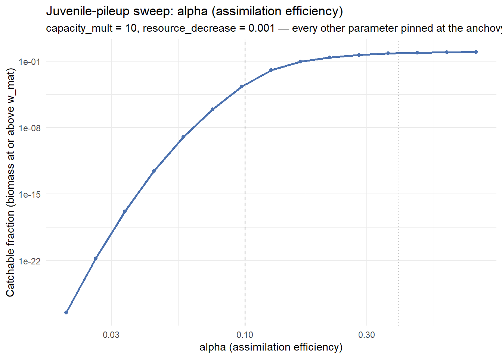
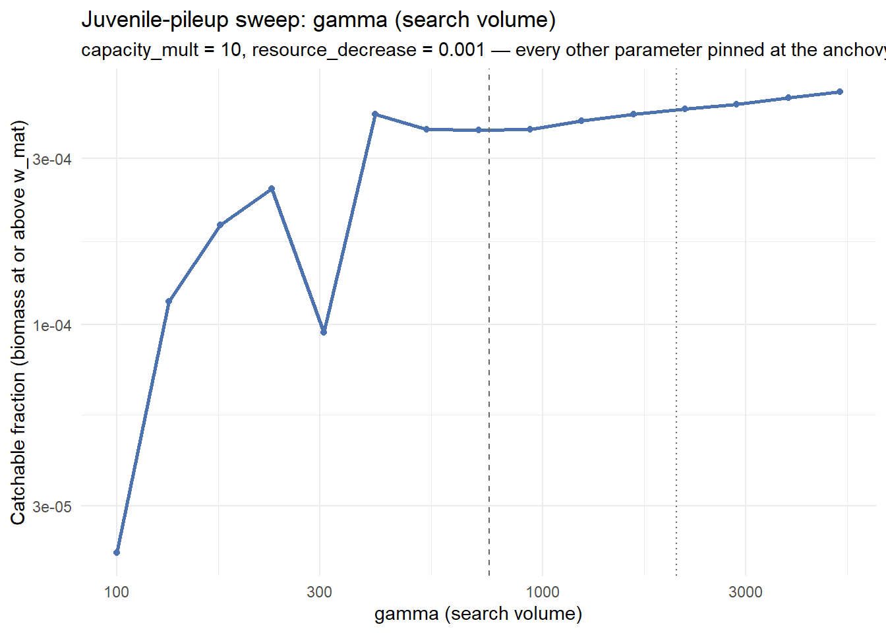
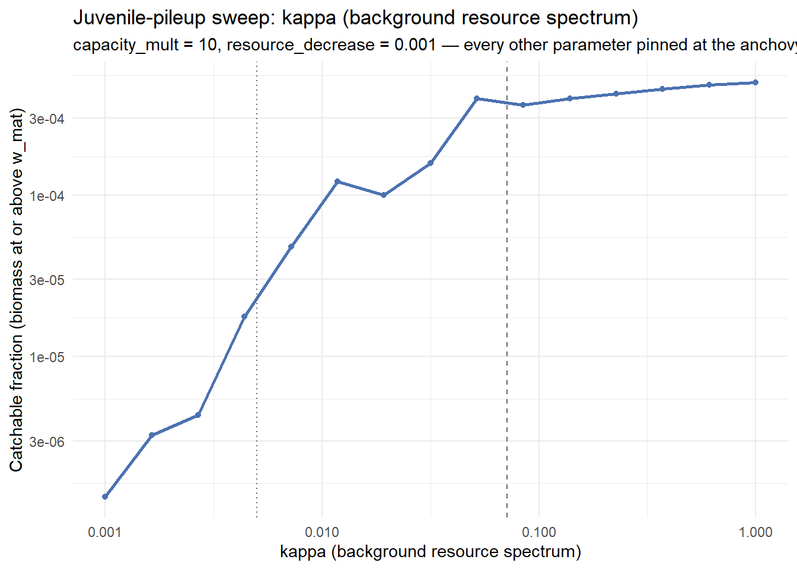
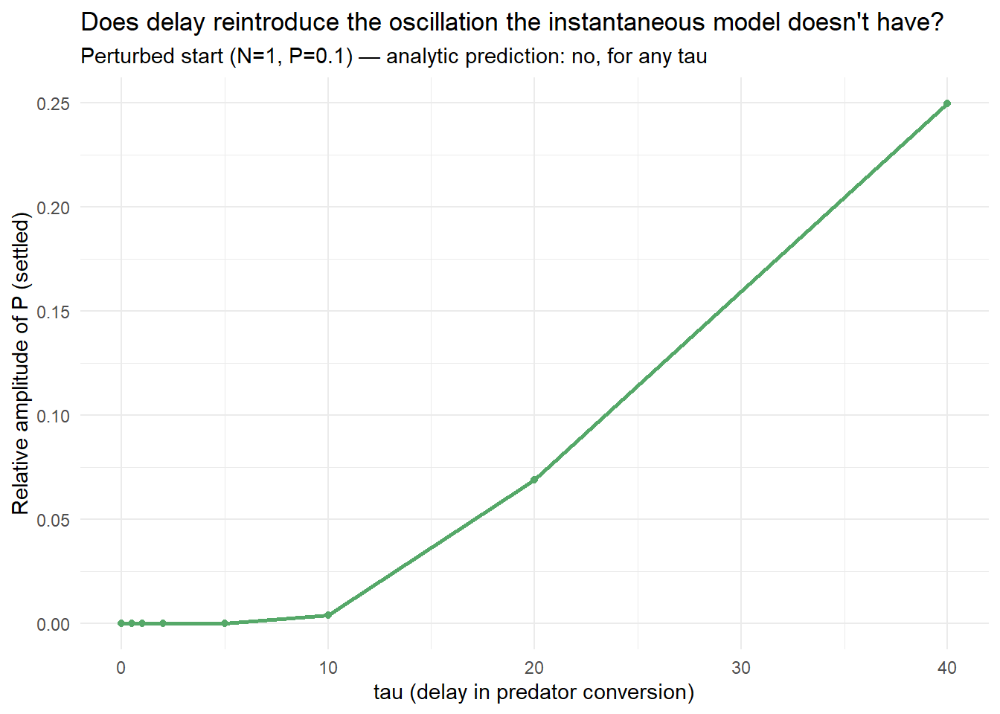
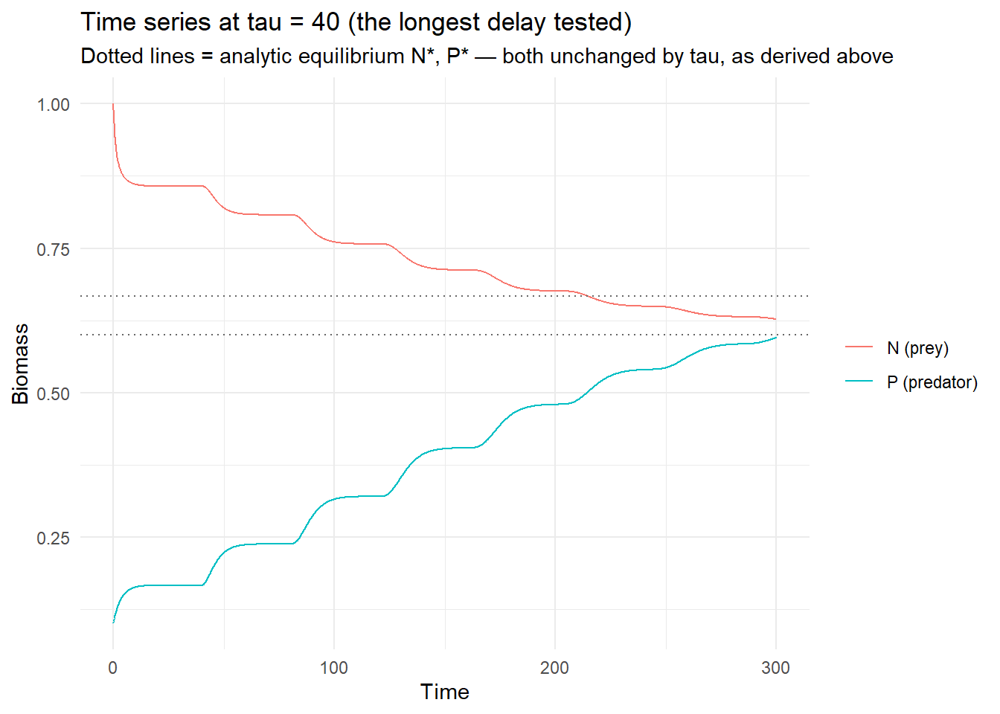

Code
library(mizer)
library(patchwork)
library(reshape2)
library(plotly)
library(dplyr)
library(mizerExperimental)
library(tidyverse)
library(glue)
library(ggplot2)
library(colorRamps)
library(future)
library(scales)Samia
July 10, 2026
Day 24 closed out the capacity_mult hysteresis window and Gustav’s resource-rate prediction, but left three threads open for what’s next: giving the toy predator-prey model a time delay, trying a feedback-loop variant of it, and rerunning the alpha/gamma/kappa juvenile-pileup isolation properly. That last one is a direct fix to a real gap: Day 24’s version only ever swapped each parameter to one alternate value , the other species’ own default , not a real range, and it surfaced a genuine confound along the way (mizer’s own default-parameter calibration turned out to be interdependent, so leaving a parameter unspecified silently let other parameters re-derive too). Today closes that thread.
Same builder as every day since Day 20, self-contained rather than sourced from 24_experiments.R but extended with alpha/gamma/kappa arguments (all defaulting to the anchovy’s own values), so the same single builder can sweep any one of the three while pinning the rest at the anchovy’s own fully-specified values throughout. That’s what sidesteps Day 24’s confound directly: nothing here is ever left for mizer to fill in, so there’s no re-derivation to worry about, and every sweep point is directly comparable to every other.
make_second_order_params_kr <- function(lambda = 2.05, resource_decrease = 0.001,
capacity_mult = 1, second_order = TRUE,
ext_diff = 0.00, alpha = 0.1, gamma = 750,
ks = 0, kappa_override = NULL) {
a0 <- 100
kappa <- if (is.null(kappa_override)) a0 * exp(-6.9 * (lambda - 1)) else kappa_override
no_w <- round(log(66.5 / 0.0003) / 0.1)
params <- newSingleSpeciesParams(
species_name = "Anchovy",
w_min = 0.0003, w_max = 66.5, w_mat = 10,
no_w = no_w, lambda = lambda, kappa = kappa,
alpha = alpha, gamma = gamma, ks = ks
)
given_species_params(params)$D_ext <- ext_diff
params <- setBevertonHolt(params)
default_capacity <- getResourceCapacity(params)
r <- getResourceRate(params) * resource_decrease
cc <- default_capacity * capacity_mult
params <- setResource(params, resource_rate = r, resource_capacity = cc,
resource_dynamics = "resource_semichemostat",
balance = FALSE)
if (second_order) {
second_order_w(params) <- c(flux = "centred", bin_average = TRUE)
}
params
}The default species’ own alpha/gamma/kappa, purely as reference lines on the sweep plots below.It’s not used to build anything, so there’s no risk of reintroducing the confound this rerun is designed to avoid:
default_species_raw <- newSingleSpeciesParams(species_name = "Anchovy")
default_alpha <- default_species_raw@species_params$alpha[1]
default_gamma <- default_species_raw@species_params$gamma[1]
default_kappa <- tryCatch(resource_params(default_species_raw)$kappa,
error = function(e) NA_real_)
anchovy_kappa <- 100 * exp(-6.9 * (2.05 - 1)) # same formula make_second_order_params_kr() uses
cat(sprintf(
paste0(
"Reference values (anchovy | default species):\n",
" alpha: %.4f | %.4f\n gamma: %.1f | %.1f\n kappa: %.4f | %.4f\n"
),
0.1, default_alpha, 750, default_gamma, anchovy_kappa, default_kappa
))Reference values (anchovy | default species):
alpha: 0.1000 | 0.4000
gamma: 750.0 | 2066.0
kappa: 0.0714 | 0.0050Three more helper functions round out the setup. catchable_fraction_at() runs a simulation out to t_max and returns the settled fraction of biomass sitting at or above w_mat. run_param_sweep() calls it across a sequence of values for one parameter, holding everything else fixed:
catchable_fraction_at <- function(params, t_max = 600) {
sim <- project(params, t_max = t_max, dt = 0.1, t_save = 0.5,
progress_bar = FALSE, effort = 0, method = "tr_bdf2")
last <- dim(sim@n)[1]
w_mat <- params@species_params$w_mat[1]
w <- sim@params@w
dw <- sim@params@dw
bm_density <- sim@n[last, 1, ] * w * dw
total_bm <- sum(bm_density)
catchable_bm <- sum(bm_density[w >= w_mat])
data.frame(catchable_fraction = catchable_bm / total_bm, error = NA_character_)
}
run_param_sweep <- function(param_name, param_seq, capacity_mult = 10,
resource_decrease = 0.001) {
bind_rows(lapply(param_seq, function(v) {
args <- list(capacity_mult = capacity_mult, resource_decrease = resource_decrease)
args[[param_name]] <- v
result <- tryCatch({
p <- do.call(make_second_order_params_kr, args)
catchable_fraction_at(p)
}, error = function(e) {
data.frame(catchable_fraction = NA_real_, error = conditionMessage(e))
})
if (!is.na(result$error)) {
warning(sprintf("%s = %.4g: %s", param_name, v, result$error))
}
data.frame(param = param_name, value = v,
catchable_fraction = result$catchable_fraction,
error = result$error)
}))
}The tryCatch wraps both the params construction and the simulation, not just the simulation - a value near the edge of the tested range can make newSingleSpeciesParams() itself throw (“the feeding level is not sufficient to maintain the fish”) before project() is ever reached, so an infeasible point needs to be caught there too. It comes back as an NA row with the error message kept, rather than halting the sweep.
plot_param_sweep() draws the result on a log-scaled y-axis, labelled in scientific notation rather than as a percentage. catchable_fraction ranges from numerically-extinct up to double-digit percentages within a single sweep, and a fixed-accuracy percent label rounds everything below its threshold to the same “0.0000%” string, which erases exactly the low end of the range this plot needs to show:
plot_param_sweep <- function(df, param_label, ref_values, log_x = TRUE) {
p <- ggplot(df, aes(x = value, y = catchable_fraction)) +
geom_line(color = "#4C72B0", linewidth = 1) +
geom_point(color = "#4C72B0", size = 1.5) +
scale_y_log10(labels = scales::label_scientific()) +
labs(x = param_label, y = "Catchable fraction (biomass at or above w_mat)",
title = sprintf("Juvenile-pileup sweep: %s", param_label),
subtitle = "capacity_mult = 10, resource_decrease = 0.001 — every other parameter pinned at the anchovy's own value") +
theme_minimal()
if (log_x) p <- p + scale_x_log10()
for (rv in ref_values) {
p <- p + geom_vline(xintercept = rv$value, linetype = rv$linetype, color = "grey40")
}
p
}capacity_mult = 10, resource_decrease = 0.001 throughout which is the same operating point every isolation check in 24_experiments.R used, comfortably inside the coexistence region so a marginal population never confounds the pileup reading.

| alpha | catchable fraction |
|---|---|
| 0.020 | 3.2×10⁻²⁸ |
| 0.057 | 1.1×10⁻⁹ |
| 0.075 | 8.9×10⁻⁷ |
| 0.097 | 2.1×10⁻⁴ |
| 0.126 | 1.10% |
| 0.164 | 8.76% |
| 0.214 | 25.5% |
| 0.279 | 46.1% |
| 0.363 | 64.7% |
| 0.472 | 78.3% |
| 0.615 | 87.1% |
| 0.800 | 92.3% |

| gamma | catchable fraction |
|---|---|
| 100 | 2.20×10⁻⁵ |
| 231 | 2.45×10⁻⁴ |
| 306 | 9.48×10⁻⁵ |
| 404 | 4.03×10⁻⁴ |
| 707 | 3.62×10⁻⁴ |
| 1237 | 3.85×10⁻⁴ |
| 2162 | 4.18×10⁻⁴ |
| 3781 | 4.50×10⁻⁴ |
| 5000 | 4.67×10⁻⁴ |
kappa_seq <- exp(seq(log(0.001), log(1), length.out = 15))
kappa_sweep_df <- run_param_sweep("kappa_override", kappa_seq) %>%
mutate(param = "kappa")
plot_param_sweep(
kappa_sweep_df, "kappa (background resource spectrum)",
ref_values = list(list(value = anchovy_kappa, linetype = "dashed"),
list(value = default_kappa, linetype = "dotted"))
)
| kappa | catchable fraction |
|---|---|
| 0.0010 | 1.35×10⁻⁶ |
| 0.0044 | 1.76×10⁻⁵ |
| 0.0118 | 1.21×10⁻⁴ |
| 0.0193 | 9.96×10⁻⁵ |
| 0.0316 | 1.58×10⁻⁴ |
| 0.0848 | 3.60×10⁻⁴ |
| 0.2276 | 4.22×10⁻⁴ |
| 0.6105 | 4.79×10⁻⁴ |
| 1.0000 | 4.96×10⁻⁴ |
all_sweeps_df <- bind_rows(alpha_sweep_df, gamma_sweep_df, kappa_sweep_df)
sweep_magnitude <- all_sweeps_df %>%
filter(is.na(error), catchable_fraction > 0) %>%
group_by(param) %>%
summarise(
min_fraction = min(catchable_fraction),
max_fraction = max(catchable_fraction),
log10_range = log10(max_fraction) - log10(min_fraction),
.groups = "drop"
) %>%
arrange(desc(log10_range))
sweep_magnitude# A tibble: 3 × 4
param min_fraction max_fraction log10_range
<chr> <dbl> <dbl> <dbl>
1 alpha 3.25e-28 0.923 27.5
2 kappa 1.35e- 6 0.000496 2.56
3 gamma 2.20e- 5 0.000467 1.33| param | min | max | log10 range |
|---|---|---|---|
| alpha | 3.2×10⁻²⁸ | 92.3% | 27.5 |
| kappa | 1.4×10⁻⁶ | 4.96×10⁻⁴ | 2.6 |
| gamma | 2.2×10⁻⁵ | 4.67×10⁻⁴ | 1.3 |
alpha is confirmed as the dominant lever, and it’s a threshold, not a gradual slope. Between alpha = 0.057 and alpha = 0.28 the catchable fraction jumps roughly 8 orders of magnitude (1.1×10⁻⁹ → 25.5%).This seems to be a viability threshold for juvenile survivorship, the same qualitative signature as the capacity_mult collapse bifurcations from Days 22-24. The anchovy’s own alpha = 0.1 sits right at the foot of that climb (catchable fraction ≈0.02% there), not in some ordinary low-effect regime , so the real anchovy model is parked right at the edge of the transition, which is a sharper explanation for the extreme pileup than Day 24’s two-point swap could give.
Gamma is close to flat. the smallest range of the three, confirming Day 24’s anchovy-side finding directly rather than just from two points. One thing worth flagging: the point at gamma = 305.8 (9.48×10⁻⁵) breaks monotonicity, dipping below both neighbours. That matches a pattern this project has seen before (Day 23’s scan-rate check, Day 24’s Type II wobble), which is critical slowing down near a transition, where t_run = 600 might not be quite enough to fully settle. It is worth a longer run at that one point before trusting it as a real feature.
kappa shows a real but modest, mostly-monotonic effect.It is bigger than gamma’s, nowhere close to alpha’s.
Day 24’s toy predator-prey model (chemostat prey growth, mass-action Type I predation) has no hysteresis at all. This was both proven analytically (chemostat growth keeps the Jacobian trace negative regardless of the predation term’s shape) and confirmed by simulation. The next candidate mechanism, flagged in Day 24’s own “What’s Next”: a time delay between a predator eating and that intake showing up as predator growth , a maturation or gestation lag , which is a well-known route to oscillation in delay differential equation (DDE) models that an instantaneous ODE can’t produce on its own.
The classical form for this (Wangersky-Cunningham, 1957) keeps predation and prey loss instantaneous, but delays the conversion of that predation into new predator biomass by tau:
dN/dt = D*(K - N(t)) - a*N(t)*P(t)
dP/dt = e*a*N(t-tau)*P(t-tau) - m*P(t)Predator death stays instantaneous, since dying isn’t subject to the same conversion lag as being born.
The question is whether adding the delay tau can turn the stable fixed point Day 24 found into an unstable one that oscillates instead. That’s checked in three steps: find where the fixed point sits, linearise the system around it to see how a small perturbation behaves, then ask what value of tau (if any) could flip that perturbation from decaying to growing.
Step 1 - the equilibrium doesn’t move.
At a constant solution, N and P aren’t changing, so every delayed term is just equal to its own current value (N(t-tau) = N(t), and likewise for P). That means the delay drops out of the equilibrium condition entirely, and setting both derivatives to zero reproduces exactly Day 24’s non-delayed result:
N* = m / (e*a)
P* = D*(K - N*) / (a*N*)So tau can only change whether this point is stable, not where the point itself sits.
Step 2 - linearise around the equilibrium.
Write N = N* + n and P = P* + p, where n and p are small perturbations, and drop every term of second order or higher in them (the standard move for checking local stability). Using the equilibrium relation e*a*N* = m to simplify the result gives:
dn/dt = -alpha*n(t) - beta*p(t)
dp/dt = gamma*n(t-tau) + m*p(t-tau) - m*p(t)where alpha = D + a*P*, beta = a*N*, and gamma = e*a*P* are just shorthand for the constants that fall out of the substitution.
Trying a solution of the form n, p ~ exp(lambda*t) , the standard ansatz for a linear system like this , turns the two differential equations into one algebraic condition on lambda, the characteristic equation:
(lambda + alpha) * (lambda + m - m*exp(-lambda*tau)) + beta*gamma*exp(-lambda*tau) = 0As a sanity check before trusting this for tau > 0: setting tau = 0 should recover Day 24’s own non-delayed result. It does. The equation collapses to lambda^2 + alpha*lambda + beta*gamma = 0, matching Day 24’s trace = -alpha, det = beta*gamma exactly.
Step 3 - ask what a Hopf bifurcation would require.
A Hopf bifurcation is the specific way a delay can destabilise a fixed point: as tau grows from 0, a pair of roots of the characteristic equation crosses from the stable side of the complex plane to the unstable side, passing through the imaginary axis at lambda = i*omega. Substituting that in and solving for when a real, positive omega^2 exists reduces to one inequality:
beta*gamma > 2*m*alpha (*)If (*) can never hold, no crossing is possible at any tau, and the fixed point stays stable forever. So the whole question comes down to checking the sign of beta*gamma - 2*m*alpha.
Substituting beta = a*N* and gamma = e*a*P*, then using e*a*N* = m once more to simplify, step by step:
beta*gamma - 2*m*alpha
= a^2*e*N**P* - 2*m*(D + a*P*) [substitute beta, gamma, alpha]
= a*P*(a*e*N*) - 2*m*D - 2*m*a*P* [expand the bracket]
= a*P*(a*e*N* - 2*m) - 2*m*D [group the a*P* terms]
= a*P*(m - 2*m) - 2*m*D [a*e*N* = m, from the equilibrium relation]
= -a*m*P* - 2*m*DEvery term in that final line , a, m, P*, D , is strictly positive by construction, so the whole expression is strictly negative, for any choice of these parameters. Condition () can never hold, which means a Hopf bifurcation is analytically impossible here, for any* delay and any parameter choice.
That’s the same underlying reason Day 24 already ruled out the Type I/II functional-response route: chemostat-style prey growth contributes a fixed restoring force (the -D/-2mD term above) that neither a saturating predation term nor a delayed one can get around.
library(deSolve)
predator_prey_params_delay <- list(D = 1, a = 1, e = 0.5, m = 0.3, K = 1)
check_hopf_feasibility <- function(parms = predator_prey_params_delay) {
D <- parms$D; a <- parms$a; e <- parms$e; m <- parms$m; K <- parms$K
N_star <- m / (e * a)
P_star <- D * (K - N_star) / (a * N_star)
alpha <- D + a * P_star
beta <- a * N_star
gamma <- e * a * P_star
data.frame(N_star = N_star, P_star = P_star, alpha = alpha, beta = beta,
gamma = gamma, beta_gamma = beta * gamma, two_m_alpha = 2 * m * alpha,
hopf_possible = (beta * gamma) > (2 * m * alpha))
}
hopf_check <- check_hopf_feasibility() N_star P_star alpha beta gamma beta_gamma two_m_alpha hopf_possible
1 0.6 0.6666667 1.666667 0.6 0.3333333 0.2 1 FALSE| N* | P* | alpha | beta | gamma | beta·gamma | 2·m·alpha | Hopf possible? |
|---|---|---|---|---|---|---|---|
| 0.600 | 0.667 | 1.667 | 0.600 | 0.333 | 0.200 | 1.000 | FALSE |
beta*gamma = 0.2 against 2*m*alpha = 1.0.It’s not close, and by the derivation above it never can be, for any of these parameters.
predator_prey_rhs_delay <- function(t, state, parms) {
N <- max(state[1], 0)
P <- max(state[2], 0)
D <- parms[["D"]]; a <- parms[["a"]]; e <- parms[["e"]]
m <- parms[["m"]]; K <- parms[["K"]]; tau <- parms[["tau"]]
N0 <- parms[["N0"]]; P0 <- parms[["P0"]]
if (t <= tau) {
lag_N <- N0
lag_P <- P0
} else {
lag <- lagvalue(t - tau)
lag_N <- max(lag[1], 0)
lag_P <- max(lag[2], 0)
}
dN <- D * (K - N) - a * N * P
dP <- e * a * lag_N * lag_P - m * P
list(c(dN, dP))
}
run_predator_prey_delay <- function(tau, state0 = c(N = 1, P = 0.1), t_max = 300,
parms = predator_prey_params_delay) {
parms$tau <- tau
parms$N0 <- state0[["N"]]
parms$P0 <- state0[["P"]]
out <- as.data.frame(dede(y = state0, times = seq(0, t_max, by = 0.1),
func = predator_prey_rhs_delay, parms = parms))
late <- out[out$time > t_max * 0.6, ]
data.frame(tau = tau, max_N = max(late$N), min_N = min(late$N),
max_P = max(late$P), min_P = min(late$P),
rel_amplitude_P = (max(late$P) - min(late$P)) / mean(late$P))
}Perturbed well away from equilibrium (N=1 vs N*=0.6, P=0.1 vs P*=0.667), since a system started exactly at a stable fixed point never oscillates regardless of tau. This is a test of whether delay lets a real perturbation grow into a sustained oscillation instead of damping back out. tau swept up to 40, two orders of magnitude past the model’s own natural timescales (1/D, 1/m):
tau max_N min_N max_P min_P rel_amplitude_P
1 0.0 0.6000000 0.6000000 0.6666667 0.6666667 1.826377e-10
2 0.5 0.6000000 0.6000000 0.6666667 0.6666667 1.625068e-09
3 1.0 0.6000000 0.6000000 0.6666667 0.6666667 1.091836e-08
4 2.0 0.6000001 0.6000000 0.6666667 0.6666665 2.438337e-07
5 5.0 0.6000167 0.6000000 0.6666666 0.6666219 6.704088e-05
6 10.0 0.6009766 0.6000093 0.6666414 0.6640213 3.933543e-03
7 20.0 0.6181879 0.6013198 0.6630575 0.6182940 6.894508e-02
8 40.0 0.6848407 0.6270410 0.5956804 0.4621942 2.495004e-01| tau | rel. amplitude of P |
|---|---|
| 0 | 1.8×10⁻¹⁰ |
| 0.5 | 1.6×10⁻⁹ |
| 1 | 1.1×10⁻⁸ |
| 2 | 2.4×10⁻⁷ |
| 5 | 6.7×10⁻⁵ |
| 10 | 3.9×10⁻³ |
| 20 | 6.9×10⁻² |
| 40 | 0.250 |
ggplot(delay_sweep_df, aes(x = tau, y = rel_amplitude_P)) +
geom_line(color = "#55A868", linewidth = 1) +
geom_point(color = "#55A868", size = 1.5) +
labs(x = "tau (delay in predator conversion)", y = "Relative amplitude of P (settled)",
title = "Does delay reintroduce the oscillation the instantaneous model doesn't have?",
subtitle = "Perturbed start (N=1, P=0.1) — analytic prediction: no, for any tau") +
theme_minimal()
Read on its own, that plot looks worrying for the analytic result - amplitude climbing smoothly from near-zero up to 0.25 by tau=40 looks exactly like a trend heading toward real oscillation. The time series at tau=40 tells a different story:
longest_delay_ts <- as.data.frame(dede(
y = c(N = 1, P = 0.1),
times = seq(0, 300, by = 0.1),
func = predator_prey_rhs_delay,
parms = modifyList(predator_prey_params_delay, list(tau = 40, N0 = 1, P0 = 0.1))
))
ggplot(longest_delay_ts, aes(x = time)) +
geom_line(aes(y = N, color = "N (prey)")) +
geom_line(aes(y = P, color = "P (predator)")) +
geom_hline(yintercept = hopf_check$N_star, linetype = "dotted", color = "grey40") +
geom_hline(yintercept = hopf_check$P_star, linetype = "dotted", color = "grey40") +
labs(x = "Time", y = "Biomass", color = NULL,
title = "Time series at tau = 40 (the longest delay tested)",
subtitle = "Dotted lines = analytic equilibrium N*, P* — both unchanged by tau, as derived above") +
theme_minimal()
Both N and P move monotonically toward the dotted equilibrium lines for the entire 300 time units.There is no overshoot, no crossing back and forth, none of the up-down-up-down signature a real oscillation would show. What the delay does produce is a visible staircase: distinct steps roughly every 40 time units, matching tau itself, since the growth rate is periodically “informed” by a signal from exactly tau ago. That staircase is a genuine delay effect, but it’s a shape imposed on a monotonic approach to equilibrium, not evidence of a limit cycle.
That reframes the amplitude sweep: rel_amplitude_P is climbing with tau not because oscillation is building, but because larger delays relax more slowly (the same critical-slowing-down pattern flagged repeatedly elsewhere in this project - Day 18, Day 23’s scan-rate check, Day 24’s Type II wobble), so the fixed t_max = 300 / late-window-starts-at-t > 180 sampling catches the system still mid-approach rather than settled. The “amplitude” being measured there is really “how far an unfinished monotonic relaxation has drifted within the sampling window,” not a real oscillation’s size.
The maths and the simulation agree: a Hopf bifurcation is impossible for this delayed-conversion model, for any tested delay. Chemostat-style prey growth blocks this route to hysteresis the same way it blocked Type I and Type II functional-response changes on Day 24. The one loose end is methodological rather than substantive: confirming that rel_amplitude_P actually decays to ~0 at tau=40 given enough time, rather than plateauing (which the algebra says is impossible, but is worth catching directly rather than assuming), needs a rerun with a much longer t_max.
A real range, not two guessed points, and the ranking Day 24 could only sketch out now has actual curves behind it: alpha dominant by a wide margin, and not just “moves a lot” but sitting on a genuine threshold that the anchovy’s own calibration happens to sit right at the foot of. gamma and kappa are both real but minor by comparison, confirming rather than overturning Day 24’s rough read.
The time-delay predator-prey model closes out a second thread from Day 24’s “What’s Next” on the same day: a full analytic derivation (equilibrium unchanged by tau, characteristic equation reduces correctly to Day 24’s own result at tau=0, and the Hopf condition beta*gamma > 2*m*alpha reduces via the equilibrium relation to -a*m*P* - 2*m*D, always negative) proves a Hopf bifurcation is impossible here for any delay, and the simulation backs it up once the amplitude sweep’s misleading climb is read correctly against the actual time series.
capacity_mult window got refined on Day 24, i.e a denser sweep over roughly [0.05, 0.3] at the same t_run to bracket where the steep climb actually starts and ends.gamma = 305.8 dip is real or an under-settled transient: Rerun just that point (and its neighbours) at a longer t_run than 600 to see whether it’s critical slowing down near a smaller feature, the same check Day 24 flagged for its own default-species Forward spike.rel_amplitude_P actually decays to ~0 at large tau given enough time, rather than plateauing. Rerun tau=40 (and perhaps larger) with a much longer t_max than 300. The algebra says a plateau is impossible, which is exactly why it’s worth checking directly rather than assuming.r*N*(1-N/K)), to test whether that is what unlocks mizer’s hysteresis. Still open from Day 24, and now the more promising direction given delay and Type II saturation have both been ruled out for the same structural reason.save_plot()’s silently-truncated filenames as the delay-experiment PNGs saved to disk missing their .png extension and (for the longer filename) part of the name itself (... tau40.png became ... tau4), almost certainly a Windows MAX_PATH (260-character) limit hit by this project’s deeply nested folder path. Worth shortening save_plot()’s output filenames or moving interesting_plots/ closer to the drive root before it silently clips something less recoverable than a plot.